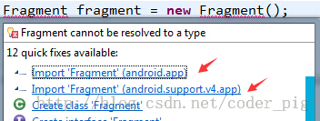
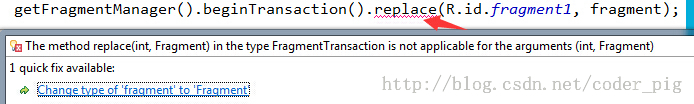
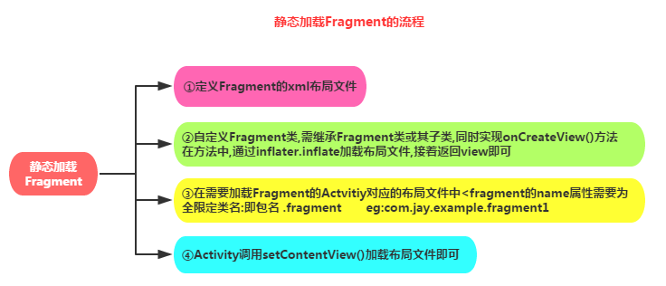
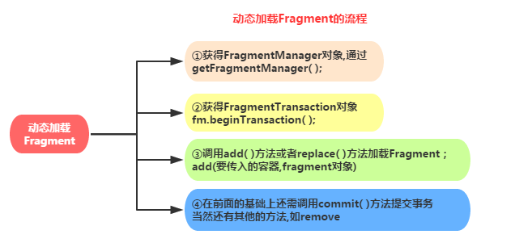
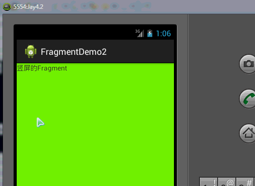
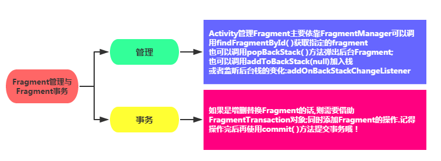

一、本节引言
好的，在上一章中我们把Android的四大组件Activity，Service，BroadCastReceiver，ContentProvider 以及他们之间的纽带：Intent，都撸了一遍，而本章节给大家带来的是一个Fragment(碎片)的东西， 本节我们就来介绍这个Fragment的一些基本概念以及用法！ 官方文档：Fragment
二、基本概念
1）它是什么鬼，有什么用？
答：Fragment是Android3.0后引入的一个新的API，他出现的初衷是为了适应大屏幕的平板电脑， 当然现在他仍然是平板APP UI设计的宠儿，而且我们普通手机开发也会加入这个Fragment， 我们可以把他看成一个小型的Activity，又称Activity片段！想想，如果一个很大的界面，我们 就一个布局，写起界面来会有多麻烦，而且如果组件多的话是管理起来也很麻烦！而使用Fragment 我们可以把屏幕划分成几块，然后进行分组，进行一个模块化的管理！从而可以更加方便的在 运行过程中动态地更新Activity的用户界面！另外Fragment并不能单独使用，他需要嵌套在Activity 中使用，尽管他拥有自己的生命周期，但是还是会受到宿主Activity的生命周期的影响，比如Activity 被destory销毁了，他也会跟着销毁！
下图是文档中给出的一个Fragment分别对应手机与平板间不同情况的处理图：

PS:简单的新闻浏览页面，使用两个Fragment分别显示新闻列表与新闻内容；
2）Fragment的生命周期图

3）核心要点：
下面说下使用Fragment的一些要点：
- 3.0版本后引入,即minSdk要大于11
- Fragment需要嵌套在Activity中使用,当然也可以嵌套到另外一个Fragment中,但这个被嵌套 的Fragment也是需要嵌套在Activity中的,间接地说,Fragment还是需要嵌套在Activity中!! 受寄主Activity的生命周期影响,当然他也有自己的生命周期!另外不建议在Fragment里面 嵌套Fragment因为嵌套在里面的Fragment生命周期不可控!!!
- 官方文档说创建Fragment时至少需要实现三个方法:onCreate( ),onCreateView( ),OnPause( ); 不过貌似只写一个onCreateView也是可以的...
- Fragment的生命周期和Activity有点类似:三种状态: Resumed:在允许中的Fragment可见 Paused:所在Activity可见,但是得不到焦点 Stoped: ①调用addToBackStack(),Fragment被添加到Bcak栈 ②该Activity转向后台,或者该Fragment被替换/删除
ps:停止状态的fragment仍然活着(所有状态和成员信息被系统保持着),然而,它对用户 不再可见,并且如果activity被干掉,他也会被干掉.
4）Fragment的几个子类：
ps:很多时候我们都是直接重写Fragment,inflate加载布局完成相应业务了,子类用的不多,等需要的 时候在深入研究!
- 对话框:DialogFragment
- 列表:ListFragment
- 选项设置:PreferenceFragment
- WebView界面:WebViewFragment
5）是用App包下的Fragment还是v4包下的：
问题概述：
相信很多朋友在使用Fragment的时候都会遇到下面这种情况：

那么我们到底是使用android.app下的Fragment还是用的android.support.v4.app包下 的Fragment呢？
答：其实都可以，前面说过Fragment是Android 3.0(API 11)后引入的，那么如果开发的app需要 在3.0以下的版本运行呢?比如还有一点点市场份额的2.3!于是乎,v4包就这样应运而生了, 而最低可以兼容到1.6版本！至于使用哪个包看你的需求了,现在3.0下手机市场份额其实已经不多了,随街都是4.0以上的，6.0十月份都出了，你说呢...所以这个时候,你可以直接使用app包下的Fragment 然后调用相关的方法，通常都是不会有什么问题的;如果你Fragment用了app包的, FragmentManager和FragmentTransaction都需要是app包的！要么用全部用app,要么全部用v4, 不然可是会报错的哦!当然如果你要自己的app对于低版本的手机也兼容的话,那么就可以选择用v4包！
使用v4包下Fragment要注意的地方：
①如果你使用了v4包下的Fragment,那么所在的那个Activity就要继承FragmentActivity哦! 案例:今天在xml文件中静态地载入fragment,然后重写了Fragment,但是在加载Activity的时候就报错了， 大概的提示就是Fragment错误还是找不到什么的,name属性改了几次还是错!最后才发现是用了 v4的包的缘故,只需让自己的Activity改成FragmentActivity即可!
②之前写了下面这段代码，然后报错：

有点莫名其妙啊,Fragment,FragmentManager,FragmentTransaction都是用的v4包啊, Activity也是继承FragmentActivity的啊?都改成app包就可以了,但是这不和我们用v4包的 前提冲突了么?其实也是有解决方法的哈?
答:只需要把getFragmentManager( )改成getSupportFragmentManager( )就可以了
三、创建一个Fragment
1）静态加载Fragment
实现流程：

示例代码：
Step 1:定义Fragment的布局，就是fragment显示内容的
Step 2:自定义一个Fragment类,需要继承Fragment或者他的子类,重写onCreateView()方法 在该方法中调用:inflater.inflate()方法加载Fragment的布局文件,接着返回加载的view对象
public class Fragmentone extends Fragment {
@Override
public View onCreateView(LayoutInflater inflater, ViewGroup container,
Bundle savedInstanceState) {
View view = inflater.inflate(R.layout.fragment1, container,false);
return view;
}
}
Step 3:在需要加载Fragment的Activity对应的布局文件中添加fragment的标签， 记住，name属性是全限定类名哦，就是要包含Fragment的包名，如:
<fragment
android:id="@+id/fragment1"
android:name="com.jay.example.fragmentdemo.Fragmentone"
android:layout_width="match_parent"
android:layout_height="0dp"
android:layout_weight="1" />
Step 4: Activity在onCreate( )方法中调用setContentView()加载布局文件即可!
2）动态加载Fragment
实现流程：

示例代码： 这里演示的是，当横竖屏切换的时候地切换Fragment：

Fragment以及布局代码就不贴出来了，直接贴MainActivity的关键代码：
public class MainActivity extends Activity {
@Override
protected void onCreate(Bundle savedInstanceState) {
super.onCreate(savedInstanceState);
setContentView(R.layout.activity_main);
Display dis = getWindowManager().getDefaultDisplay();
if(dis.getWidth() > dis.getHeight())
{
Fragment1 f1 = new Fragment1();
getFragmentManager().beginTransaction().replace(R.id.LinearLayout1, f1).commit();
}
else
{
Fragment2 f2 = new Fragment2();
getFragmentManager().beginTransaction().replace(R.id.LinearLayout1, f2).commit();
}
}
}
四、Fragment管理与Fragment事务

五、Fragment与Activity的交互

可能有的朋友不喜欢看图，接下来用文字介绍下吧：
1）组件获取
Fragment获得Activity中的组件: getActivity().findViewById(R.id.list)；
Activity获得Fragment中的组件(根据id和tag都可以)：getFragmentManager.findFragmentByid(R.id.fragment1);
2）数据传递
①Activit传递数据给Fragment:
在Activity中创建Bundle数据包,调用Fragment实例的setArguments(bundle) 从而将Bundle数据包传给Fragment,然后Fragment中调用getArguments获得 Bundle对象,然后进行解析就可以了
②Fragment传递数据给Activity
在Fragment中定义一个内部回调接口,再让包含该Fragment的Activity实现该回调接口, Fragment就可以通过回调接口传数据了,回调,相信很多人都知道是什么玩意,但是 写不出来啊,网上的一百度"fragment传数据给Activity",全是李刚老师的那个代码,真心无语 算了,这里就写下局部代码吧,相信读者一看就懂的了:
Step 1:定义一个回调接口:(Fragment中)
/*接口*/
public interface CallBack{
/*定义一个获取信息的方法*/
public void getResult(String result);
}
Step 2：接口回调（Fragment中）
/*接口回调*/
public void getData(CallBack callBack){
/*获取文本框的信息,当然你也可以传其他类型的参数,看需求咯*/
String msg = editText.getText().toString();
callBack.getResult(msg);
}
Step 3:使用接口回调方法读数据(Activity中)
/* 使用接口回调的方法获取数据 */
leftFragment.getData(new CallBack() {
@Override
public void getResult(String result) { /*打印信息*/
Toast.makeText(MainActivity.this, "-->>" + result, 1).show();
}
});
总结下方法： ->在Fragment定义一个接口,接口中定义抽象方法,你要传什么类型的数据参数就设置为什么类型; ->接着还有写一个调用接口中的抽象方法,把要传递的数据传过去 ->再接着就是Activity了,调用Fragment提供的那个方法,然后重写抽象方法的时候进行数据 的读取就可以了!!!
③Fragment与Fragment之间的数据互传
其实这很简单,找到要接受数据的fragment对象,直接调用setArguments传数据进去就可以了 通常的话是replace时,即fragment跳转的时候传数据的,那么只需要在初始化要跳转的Fragment 后调用他的setArguments方法传入数据即可! 如果是两个Fragment需要即时传数据,而非跳转的话,就需要先在Activity获得f1传过来的数据, 再传到f2了,就是以Activity为媒介~
示例代码如下：
FragmentManager fManager = getSupportFragmentManager( );
FragmentTransaction fTransaction = fManager.beginTransaction();
Fragmentthree t1 = new Fragmentthree();
Fragmenttwo t2 = new Fragmenttwo();
Bundle bundle = new Bundle();
bundle.putString("key",id);
t2.setArguments(bundle);
fTransaction.add(R.id.fragmentRoot, t2, "~~~");
fTransaction.addToBackStack(t1);
fTransaction.commit();
六、走一次生命周期图：
思前想后还是决定要带大家简单的走一趟生命周期图，加深大家对Fragment生命周期的理解：
①Activity加载Fragment的时候,依次调用下面的方法: onAttach -> onCreate -> onCreateView -> onActivityCreated -> onStart ->onResume
②当我们弄出一个悬浮的对话框风格的Activity,或者其他,就是让Fragment所在的Activity可见,但不获得焦点 onPause
③当对话框关闭,Activity又获得了焦点: onResume
④当我们替换Fragment,并调用addToBackStack()将他添加到Back栈中 onPause -> onStop -> onDestoryView ！！注意,此时的Fragment还没有被销毁哦!!!
⑤当我们按下键盘的回退键，Fragment会再次显示出来: onCreateView -> onActivityCreated -> onStart -> onResume
⑥如果我们替换后,在事务commit之前没有调用addToBackStack()方法将 Fragment添加到back栈中的话;又或者退出了Activity的话,那么Fragment将会被完全结束, Fragment会进入销毁状态 onPause -> onStop -> onDestoryView -> onDestory -> onDetach
七、本节小结：
本节跟大家讲解了以下Fragment一些基本的概念以及简单的用法，相信大家会慢慢喜欢上 Fragment的，因为篇幅的关系，本节就写这么多，下一节我们带大家来写一些关于Fragment 的常用实例，敬请期待，谢谢~